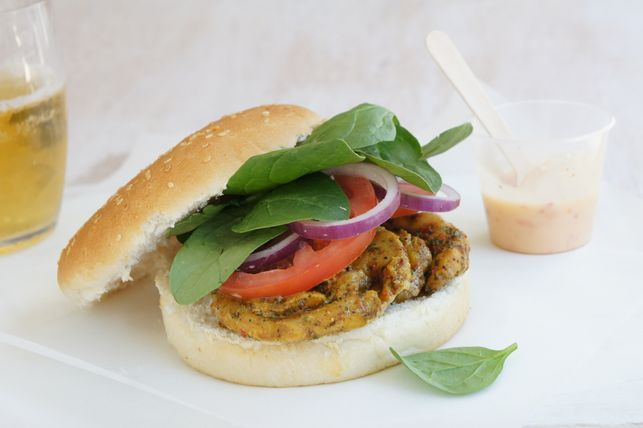

Portuguese Chicken Burger

Ingredients
- 1/2 cup low-fat mayonnaise
- 1 1/2 tbs sweet chilli sauce
- 6 (fillets) chicken thighs trimmed
- 3 tsp Portuguese chicken seasoning
- 3 tbs olive oil
- 2 tbs lemon juice
- 1 pinch sea salt *to taste
- 1 olive oil spray
- 6 hamburger rolls halved
- 70 g mixed salad leaves
- 1 red onion sliced
- 2 tomatoes thinly sliced
Method
- Combine mayonnaise and sweet chilli sauce in a bowl, cover and refrigerate.
- Place chicken between 2 sheets of baking paper. Using the flat side of a meat mallet, pound fillets until approximately 1 cm thick.
- Combine seasoning, oil and lemon juice in a shallow ceramic dish.
- Add chicken, turning to coat well and sprinkle with sea salt.
- Cover and refrigerate for 30 minutes.
- Preheat a barbeque plate or char-grill over medium high heat. Remove chicken from marinade.
- Cook for 4 minutes each side or until cooked through.
- Spray cut sides of rolls with olive oil spray. Toast rolls on barbeque plate or char-grill for 1 to 2 minutes or until golden.
- Place salad leaves, tomato, onion and chicken on roll bases. Top with the mayonnaise mixture. Replace roll tops and serve.